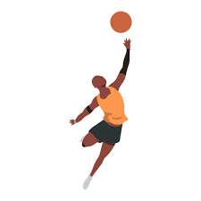

Al deporte conocido como baloncesto, o basketball, es el deporte el cual consiste en encestar o hacer que el balón pase a traves del aro, el cual esta a una altura elevada. Quien sea que haga la mayor cantidad de "canastas" es el que gana.
La historia de como se creo en basketball comenzó en Estados Unidos en 1891. Fue creado por el profesor canadiense James Naismith de la Internacional YMCA Training School de Springfield. Debido a los fuertes y bruscos climas de Massachusets, lugar donde se encontraba la escuela en la cual el profesor debía dar los entrenamientos, el deporte necesitaba poder jugarse bajo techo, además de que en vez de hacer un deporte que implicara fuerza y contacto, Naismith decidió introducir un balón , lo que llegaría a aportar un gran dinamismo al deporte.
¿Cuales son sus reglas?
21/03/2022
Crossover
Según la FIBA (Federación Internacional de Baloncesto) las reglas del basketball son las siguientes.
Solo puede haber 5 jugadores dentro de la cancha.
Los cambios son ilimitados.
El juego es de 4 bloques de 10 minutos cada bloque.
Si hay empate, el juego se extiende 5 minutos hasta que un equipo haga anotación.
El jugador no puede estar botando, parar, y después volver a botar.
Una vez que el jugador para de botar, el jugador tiene 2 pasos con el balón en las manos, con los cuales debe buscar dar tiro o pase a otro jugador.
Una vez que el equipo toma posesión del balón, el equipo tiene 24 segundos para anotar.
Cuando el equipo tiene la posesión del balón, y pasa la media cancha ya no pueden volver a la otra mitad.
Los jugadores que van a la ofensiva no pueden estar dentro del área restringida por más de 3 segundos.
También existen las faltas como en todo deporte, las cuales con estas.
Se le dice falta personal cuando hay un contacto ilegal entre dos oponentes.
Cuando un jugador llega a acumular 5 faltas contra los oponentes, este es expulsado del resto del juego.
Las faltas que se cometan mientras se esta haciendo un tiro, estos resultan en 2 tiros libres, los cuales valen 1 punto cada uno, si es que el tiro no encestó, si el tiro encestó solo es 1 tiro libre.
Cuando el equipo acumule 4 faltas, a partir de ese punto cada falta contará como 2 tiros libres, aún si no era intento de tiro.
Como tirar
21/03/2022
Previamente se ha mencionado los tiros, de los cuales se pueden clasificar en 3 tipos.
Tiros libres=1 punto cada canasta.
Tiros dentro del área de 3=2 puntos cada canasta.
Tiros fuera del área de 3=3 puntos cada canasta.
Al hablar de los tiros de basketball, se pueden hallar bastantes tipos de tiros en el basketball, los cuales son los siguientes.
Gancho: Como su nombre lo dice, el tiro se basa en que el jugador termina y ejecuta el tiro con su brazo en posición de gancho, lo que le permita alejarla del oponente y cubrirla.
Tiro en suspensión: Este tiro es un tiro (después de la lista hay un video de como aprender a tirar) el cual simplemente se lanza mientras el jugador se encuentra en el aire, ya que previamente salto para más impulso.
Colada: Es el tiro que se hace después de haber dado los dos pasos, lo cuál se hizo después de haber dejado de botar.
Clavada: La clavada es como la colada, lo único es que el jugador tiene la oportunidad de literalmente clavar el balón en el aro.
Tiro libre: El tiro libre es el tiro que se ejecuta siempre a la misma distancia los cuales son como recompensa por falta.
Tiro de basketballAutor: Sikana ES Publicación: 20/Julio/2017
El video anterior demuestra el como colocarse en la posicion correcta para hacer el tiro, el como prepararlo y el como ejecutarlo o hacer el tiro.
Honestamente lo que decribe el video es muy atinado y muy certero, ya que lo explica tal y como lo es en la NBA, la liga profesional de baloncesto
Top 10 jugadores de la NBA
21/03/2022
En esta sección se colocarán a los 10 mejores jugadores de la NBA según una encuesta en Twitter de parte de nuestro servidor, ESPN.
Damian Lillard (Portland Trail Blazers)
James Harden (Brooklyn Nets)
Devin Booker (Phoenix Suns)
Anthony Davis (Los Angeles Lakers)
Kawhi Leonard (Los Angeles Clippers)
Luka Doncic (Dallas Mavericks)
Stephen Curry (Golden State Warriors)
Kevin Durant (Brooklyn Nets)
Giannis Antetokounmpo (Milwaukee Bucks)
LeBron James (Los Angeles Lakers)
Sitios oficiales en los cuales se puede encontrar informacion
Como ya se ha mencionado anteriormente el inventor del basketball en si es James Naismith. Una de las razones por las que el basketball es como es, se debe a que en su momento los deportes eran todos monótonos y no les resultaba atractivas a los jóvenes.
Otra de las razones por la cual el basketball es así, es que su creador tenia claro y fijo en su cabeza que para el deporte se necesitaría una buena condición física, pero tampoco quería que fuese tan brusco y rudo como otros, debido a la agresividad que tenían los alumnos en su momento, por lo cuál está la regla de que los jugadores no pueden correr con el balón sin botar, ya que esto les da ciertas limitaciones con la rudeza en el juego, al igual que otras reglas que ya se han presentado anteriormente.
La idea del juego en lo más general posible, surgió del juego popular de su niñez "pato sobre una roca", que simplemente consistía en colocar un objeto en algún lugar, y con un objeto derribarlo o al menos golpearlo. Entonces éste ordenó a que le trajeran unas cajas para poder ponerlo a prueba, sin embargo solo logro conseguir unas cestas para melocotones, las mismas que colocó a una altura de 3.05 metros en el gimnasio.
Tal vez parezca impresionante, pero en su momento el basketball no tuvo tanto éxito como el que tiene ahora. En la época de los años 1946, algunos cuantos meses después de que la segunda guerra mundial cesó, se buscaba encontrar alguna fuente de entretenimiento y distracción para la población, pues en ese momento las personas alrededor del mundo estaban muy afectadas por los sucesos de esos momentos. Entonces deciden lanzar el baloncesto como proyecto profesional, sin embargo este no tuvo el éxito que se esperaba, hasta que 1954 cuando se crea la regla referente a la posesión del balón por los equipos, después de esa regla, los partidos eran más movidos y emocionantes, pues en estos ahora había más movimiento y emoción debido a que los equipos debían encestar en el tiempo limitado que tenían la posesión del balón.
Valor monetario de los equipos.
Obviamente los equipos se puede decir que tienen un "valor monetario", pues se debe a la calidad de sus jugadores, equipo, staff, etc. En esta gráfica se muestra un comparación entre el precio de los equipos en 2012 y 2018.
Como se puede apreciar en las estadísticas, hay un gran aumento de valor en el equipo de New York Knicks entre lo que era en el 2012 y lo que fue en 2018. Y no solo aumenta el precio de los equipos, si no que también aumenta la cantidad de ingresos que estos obtienen por los partidos de basketball. Estos son los ingresos de los New York Knicks en 2012 y en 2018.
Los ingresos no solo provienen de la venta de boletos, pues si fuera así, sería una brutalidad la cantidad de partidos que debería haber a lo largo del año para cumplir las cifras. Los lugares de donde provienen bastantes de los ingresos, además de las entradas para partidos, son los derechos televisivos, el mercado del equipo y la gestión de marca son de los mayores ingresos que obtienen los equipos de basketball, obviamente también esta la venta de boletos, que también aporta bastante este ámbito de ingresos.
Actualmente algunas personas podrían pensar que los equipos con mayores ingresos a lo largo de todo el mundo, son los que tienen a los jugadores mas famosos o populares en el mundo, los cuales vendrían siendo, por ejemplo, LeBron James, Stephen Curry, James Harden, etc. Algunos si están en los equipos más valiosos actualmente, sin embargo el equipo actual con mayor valor monetario en el mercado, son los New York Knicks, de ahí la razón por la cuál fueron usados en este artículo, ya que se han mantenido en el top de los equipos con mayor valor por años. En 2012 eran los primeros, en 2018 eran los primeros y en 2021 fue denominado como el equipo con mayor valor monetario.
Jugadores más famosos del basketball.
Michael Jordan es tal vez el jugador más famoso y reconocido a lo largo del mundo por todos los que conocen el basketball, e incluso los que no, ya que este tienen su misma linea de diseño de zapatos deportivos con la empresa de zapatos, también mundialmente reconocida, la cual es NIKE. Mientras ganaba se convertía en un icono global. Su juego traspasó la cancha y su brillantez en la pista definió los parámetros de una nueva generación de jugadores.
LeBron James también es uno de los jugadores más reconocidos en el ámbito del basketball a lo largo del mundo entero, siendo parte también de un equipo el cual tiene bastante legado en la historia del basketball. Los Lakers de Los Ángeles. Ha construido su juego en base a la potencia, pero su habilidad para el pase quizás sea su mejor virtud. Ha reinventado la forma de disfrutar de un atleta en su mejor punto de forma
Kareem Abdul-Jabbar es también uno de los jugadores reconocidos en el mundo, y al igual LeBron James, jugador del equipo de Los Lakers de Los Ángeles, el cual como ya ha sido mencionado antes, es uno de los equipos de basketball que más historia o con más fama alrededor del mundo, pues esto se debe a los jugadores que este equipo ha tenido por el pasar de los años, que han dejado un gran legado al equipo. Nadie en la historia puede igualar su largo palmarés. Su gancho era imparable y se puede discutir que no fuera deslumbrante pero no que haya alguien mejor.
Bill Russell es igualmente un jugador de lo más conocido en la historia del basketball. Perteneciente del equipo de Boston Celtics, el cual jugó trece temporadas con el mismo equipo. Éste en la década de los 60s desempeñó un gran papel como jugador de los Boston Celtics, en la que ganó un total de 11 títulos. El mayor ganador de la historia del baloncesto. Convirtió a los Celtics en una fortaleza defensiva y fue el contraste perfecto para Chamberlain, así como un jugador que no hubiera desentonado en ninguna época.